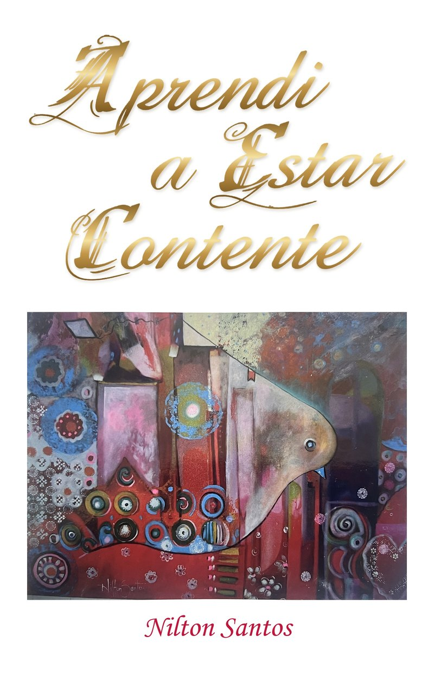

Nilton Santos
🎧 Audiolivro completo · 1 h 12 min · 10 capítulos
Gratuito — ouça aqui ou baixe para o seu celular.
O arquivo .m4b guarda os capítulos: abra-o num aplicativo de audiolivros (Apple Livros, Smart AudioBook Player, VLC…) para navegar entre eles. Narração com voz sintética (ElevenLabs), a partir do texto original do autor.